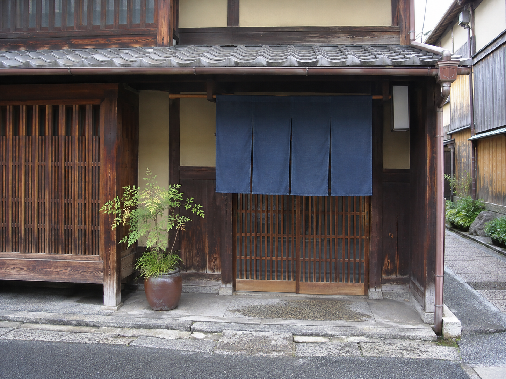

◎ 年末年始の仕出し・おせち料理のご予約承ります ◎お電話にてお早めにどうぞ。詳しくは こちら をご覧下さい。
ようこそ、はんなり亭へ
 店の表構え（イメージ） | 祇園四条、宮川町界隈で。
旬のお野菜と、おだしを大切に。明治三十一年の創業より
皆様のお席のお手伝いを
させていただいております。 お祝いのお席、ご法事、
ご贔屓のお客様のご会食、
会社のお集まりなどに
ご用命下さい。 店主 山本 宗一郎（架空） |
※お料理は季節・仕入れにより内容が変わります。写真は一例です。
※当店には大きな駐車場はございません。お車の方は 地図のページ をご覧下さい。
■ お知らせ・新着情報 ■
| 更新日 | お知らせ |
|---|
| 2004.11.18 | NEW!! 平成十七年 おせち料理のご案内を掲載しました。 |
| 2004.10.02 | 秋のお献立になりました。松茸は入荷状況によります。 |
| 2004.08.10 | お盆期間の配達は混み合います。配達についてもお読み下さい。 |
| 2004.04.01 | 税込価格の表示について、お料理のページをご確認下さい。 |
| 2003.12.25 | 年末のご注文受付は終了しました。ありがとうございました。 |
| 2003.06.08 | FAXご注文用紙を掲載いたしました。 |
これまでの更新履歴はこちら →
お料理のご案内
ご予約はお電話またはFAXでお願い致します。
メールによるご予約は承っておりません。
|
おかみからひとこと朝夕、冷えこむようになりました。お庭の南天も赤く色づいております。温かいお料理をご用意して、お待ちしております。 平成16年 霜月 ご予約はこちらお電話・FAXで TEL 075-XXX-0101
FAX 075-XXX-0102 架空・発信できない番号です。 ご予約時のお願い営業のご案内昼 11:30～14:00
夜 17:00～20:00
定休日：水曜日
夜のお席は要予約 ※仕出しの受付時間とは
異なります。ご注意下さい。 リンクはご自由にどうぞ。
相互リンクはお電話でご相談を。
当店の写真・文章の転載は
ご遠慮下さい（当時風の表記）。
|
京の季節を、食卓へ。 仕出し・ご宴会のご用命は はんなり亭
|